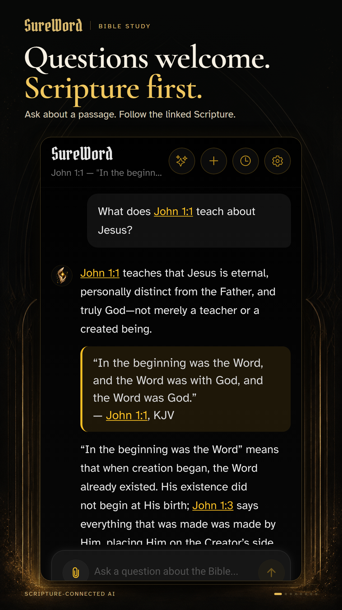
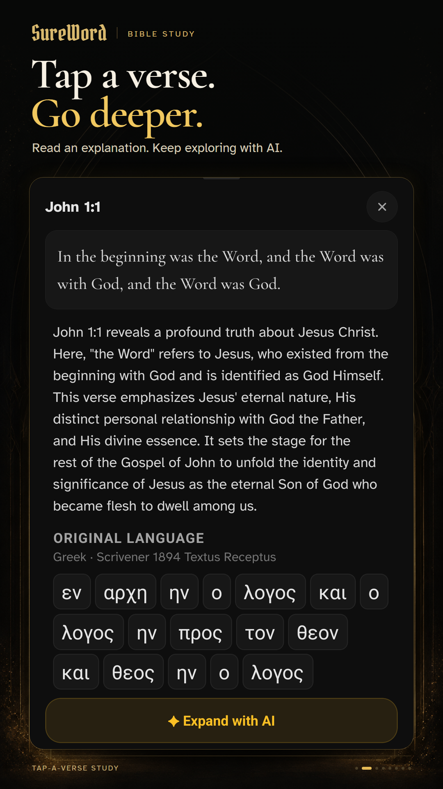
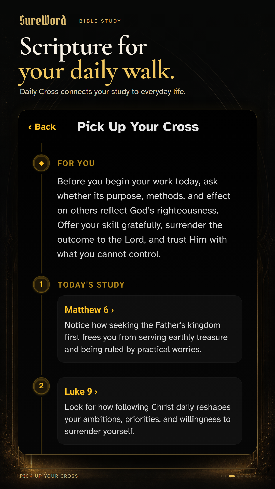
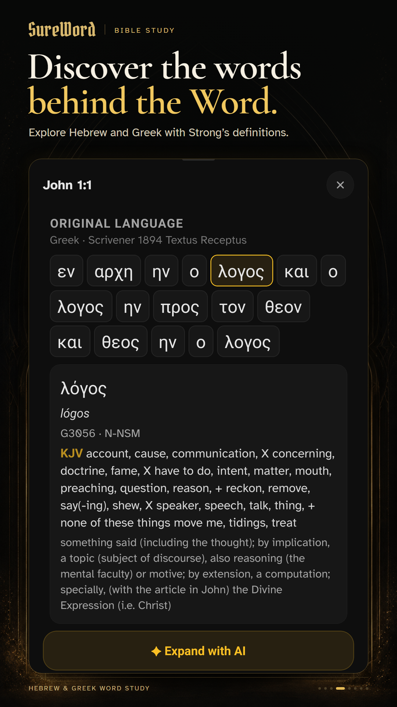
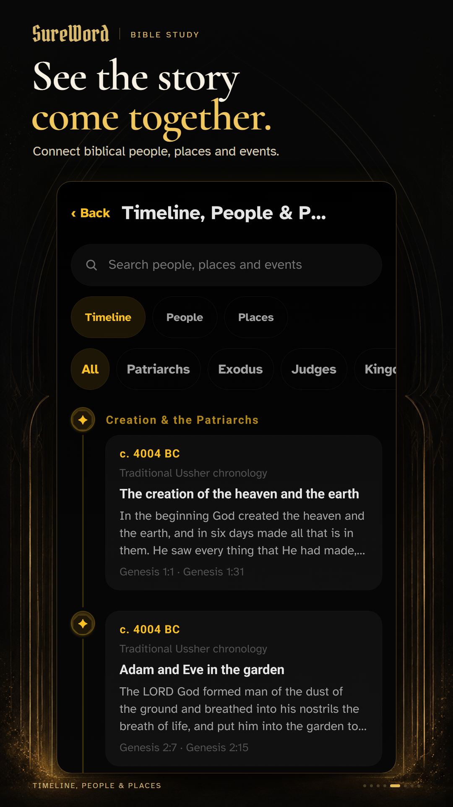
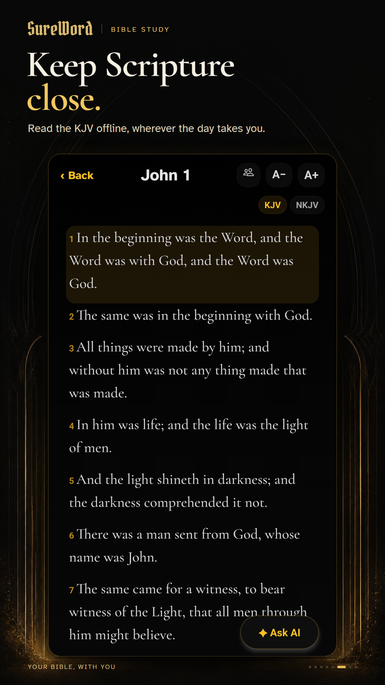
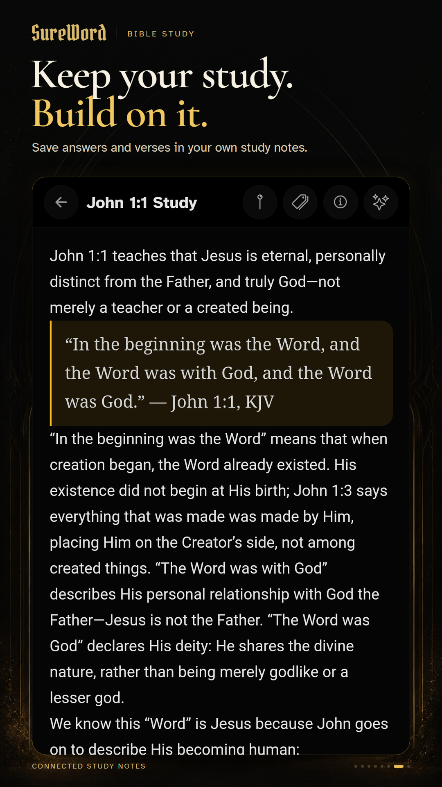
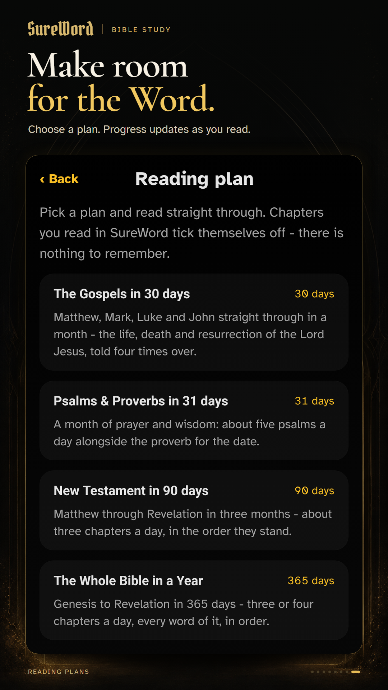

8 Play Store phone images · 1080 × 1920 · RGB PNG
Real Android 1.50.0 captures. Click an image for the full-size export.
Research & claims · Capture provenance & verification · Editable copy & crop settings







